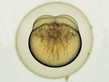
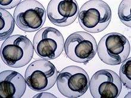
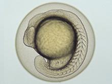
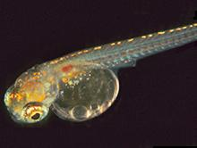
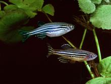
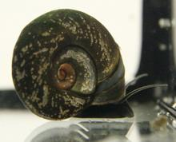

 4-Zell-Stadium des Zebrabärblings (Danio rerio)
Die Arbeitsgruppe Aquatische Ökologie und Toxikologie (Prof. Thomas Braunbeck) an der Universität Heidelberg untersucht, wie ausgewählte Antidiabetika, synthetische Süßstoffe und Antidepressiva auf junge Entwicklungsstadien von Fischen (Zebrabärblingen) wirken.
Schwerpunktmäßig geht es bei den Untersuchungen darum, die Mechanismen aufzuklären, die den beobachteten Effekten zugrunde liegen. Vor allem aber wollen die Biologinnen und Biologen die Folgen der Effekte auf das Verhalten der Fische klären, beispielsweise erfahren, wie bestimmte Antidepressiva wirken.
 Ca. 26 h alte Embryonen des Zebrabärblings
 32 h alter Embryo des Zebrabärblings
 Junger Zebrabärbling
 Ausgewachsene Zebrabärblinge
 Unterschiedlich schwere Missbildungen im Schädelskelett von Embryonen des Zebrabärblings nach Belastung mit Umweltchemikalien
Unterschiedlich schwere Missbildungen im Schädelskelett von Embryonen des Zebrabärblings nach Belastung mit Umweltchemikalien
") Bachforellen (Salmo trutta)
Bachforellen (Salmo trutta)
Die Abteilung Physiologische Ökologie der Tiere der Universität Tübingen erforscht unter Leitung von Prof. Dr. Rita Triebskorn die Auswirkungen ausgewählter Antidiabetika, synthetischer Süßstoffe und Antidepressiva auf den Gesundheitszustand und die Embryonalentwicklung einheimischer aquatischer Organismen.
Im Fokus stehen Bachforelle (Salmo trutta) oder Posthornschnecke (Planorbarius corneus).
 Posthornschnecke
Dazu untersuchen die Wissenschaftlerinnen und Wissenschaftler den Gewebszustand der Leber und des Hepatopankreas, eines Verdauungsorganes. Darüber hinaus ermitteln sie, wie sich verschiedene Stoffwechselprozesse und das Verhalten beziehungsweise die Aktivität von Neurotransmittern verändern.
Prof. Dr. Thomas Braunbeck
Universität Heidelberg
Aquatische Ökologie und Toxikologie
COS - Centre for Organismal Studies
Im Neuenheimer Feld 504
D-69120 Heidelberg
+49 (0) 6221 54 56 68
braunbeck@uni-hd.de
Prof. Dr. Rita Triebskorn
Universität Tübingen
Physiologische Ökologie der Tiere
Auf der Morgenstelle 5
D-72076 Tübingen
+49 (0) 7071 29 78 892
rita.triebskorn@uni-tuebingen.de


Das Projekt wird vom Land Baden-Württemberg im Rahmen des Wassernetzwerkes gefördert.
Laufzeit: 2016 bis 2021
Prof. Dr. Thomas Braunbeck
Aquatische Ökologie und Toxikologie
COS - Centre for Organismal Studies
University of Heidelberg
Im Neuenheimer Feld 504
D-69120 Heidelberg
braunbeck@uni-hd.de
Tel.: +49-(0)62 21-54 56 68
Unterschiedlich schwere Missbildungen im Schädelskelett von Embryonen des Zebrabärblings nach Belastung mit Umweltchemikalien